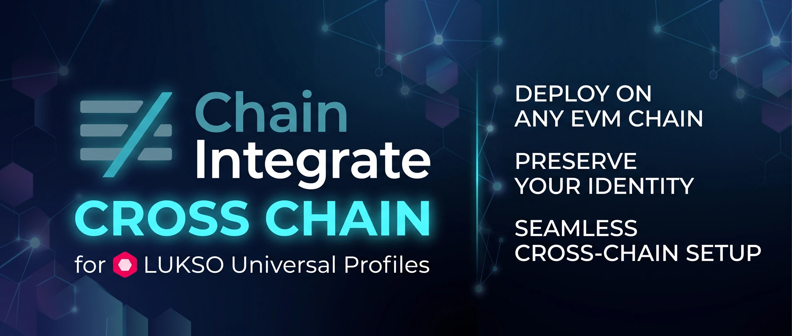

Per chi è. Per chi usa i servizi di ChainIntegrate su LUKSO, come il Traceability Registry, con una Universal Profile (UP). Solo LUKSO: niente altre reti, nessuna chiave da estrarre, niente MetaMask.
Cosa ottieni. UP Wallet, sul computer (estensione del browser) e sul telefono (app Android), ti mostra in parole semplici cosa un servizio ti chiede di firmare ("registra il lotto X nel registro Y", "aggiungi questo delegato", "cambia il titolare" in rosso) e lo controlla prima della firma. Ogni firma passa poi da una finestra di firma separata, che ricalcola cosa viene firmato davvero, e dalla tua passkey, impronta o PIN.
Come sono divise le chiavi.
Sul computer installa l'estensione Universal Profile di LUKSO (dal sito di LUKSO, nel Chrome Web Store) e crea il tuo profilo: un nome, un'immagine, e il profilo su LUKSO è tuo. Crearlo e modificarlo è gratis: il gas lo paga il relayer di LUKSO.
L'estensione propone un file di backup (JSON) protetto da una password. Scaricalo e conserva file e password in due posti sicuri, separati tra loro, non solo su questo computer.
Se l'estensione te lo propone, imposta anche il recupero del profilo: aggiunge una chiave di recupero (nell'elenco dei controller la vedi come "recovery", con il solo permesso di aggiungere controller) che ti permette di riavere l'accesso se perdi la chiave dell'estensione. Non toglierla mai: la pagina di autorizzazione la mostra come "gestione della UP" e non la tocca.
chrome://extensions → Modalità sviluppatore → "Carica estensione non pacchettizzata". La guida generale ("Strumenti") ha tutti i dettagli, aggiornamenti compresi..apk. La prima volta Android dice che non può installare app da quella fonte e propone Impostazioni: attiva "Consenti da questa fonte" e torna indietro.Apri UP Wallet, scegli LUKSO e la tua UP. In 3 · Controller premi "Usa la chiave di questo computer" (estensione: una passkey come Windows Hello, o una password) o crea la chiave del telefono (app: impronta o PIN). Il pannello "Questo computer" o "Questo telefono" mostra l'indirizzo della chiave: ti serve al passo dopo.
Apri la pagina Autorizza un dispositivo su LUKSO:
La pagina mostra il risultato e l'elenco delle chiavi, ognuna con il suo nome. Ripeti per ogni dispositivo.
Su LUKSO la chiave del dispositivo paga il gas da sola, in LYX: mandale pochi LYX (centesimi di euro per operazione). Il pannello "Questo computer" / "Questo telefono" di UP Wallet ne mostra il saldo, e lo può rimandare al profilo quando non ti serve più.
Nel servizio (per esempio il Traceability Registry) collegati con UP Wallet tramite WalletConnect. Ogni richiesta apre la finestra di UP Wallet con cosa fa in parole semplici e i controlli; poi la finestra di firma mostra cosa viene firmato davvero, e la tua passkey, impronta o PIN lo conferma.
Tenerla è la scelta più sicura. È la tua chiave amministratore: non ti serve tutti i giorni, ma è quella che autorizza un dispositivo nuovo e revoca uno perso.
Se vuoi proprio toglierla, prima verifica che il backup funzioni: ripristinalo in un altro profilo del browser (o su un altro computer), controlla che il profilo si apra, e solo dopo togli l'estensione. Senza una chiave amministratore funzionante, un dispositivo perso non si può più revocare.
Who it is for. Anyone who uses ChainIntegrate's services on LUKSO, such as the Traceability Registry, with a Universal Profile (UP). Only LUKSO: no other networks, no keys to extract, no MetaMask.
What you get. UP Wallet, on the computer (browser extension) and on the phone (Android app), shows in plain words what a service asks you to sign ("record the lot X in the registry Y", "add this delegate", "change the holder" in red) and checks it before you sign. Every signature then goes through a separate signing window that works out again what is really signed, and through your passkey, fingerprint or PIN.
How the keys are split.
On the computer, install LUKSO's Universal Profile browser extension (from LUKSO's site, in the Chrome Web Store) and create your profile: a name, an image, and the profile is yours on LUKSO. Creating it and editing it are free: LUKSO's relayer pays the gas.
The extension offers a backup file (JSON) protected by a password. Download it and keep file and password in two safe places, apart from each other, not only on this computer.
If the extension offers it, also set up the profile's recovery: it adds a recovery key (in the list of controllers it shows as "recovery", allowed only to add controllers) that gets you back in if you lose the extension's key. Never remove it: the authorization page shows it as "manages the UP" and leaves it alone.
chrome://extensions → Developer mode → "Load unpacked". The general guide ("Tools") has every detail, updates included..apk file. The first time, Android says it can't install apps from that source and offers Settings: turn on "Allow from this source" and go back.Open UP Wallet, choose LUKSO and your UP. In 3 · Controller press "Use this computer's key" (extension: a passkey such as Windows Hello, or a password) or create the phone key (app: fingerprint or PIN). The panel "This computer" or "This phone" shows the key's address: you need it in the next step.
Open the page Authorize a device on LUKSO:
The page shows the result and the list of keys, each with its name. Repeat for each device.
On LUKSO the device key pays its own gas, in LYX: send it a few LYX (cents of a euro per operation). UP Wallet's "This computer" / "This phone" panel shows its balance, and can send it back to the profile when you no longer need it.
In the service (for example the Traceability Registry), connect with UP Wallet through WalletConnect. Each request opens UP Wallet's window with what it does in plain words and the checks; then the signing window shows what is really signed, and your passkey, fingerprint or PIN confirms it.
Keeping it is the safest choice. It is your admin key: you don't need it every day, but it is the one that authorizes a new device and revokes a lost one.
If you really want to remove it, first check that the backup works: restore it in another browser profile (or another computer), check that the profile opens, and only then remove the extension. Without a working admin key, a lost device can no longer be revoked.